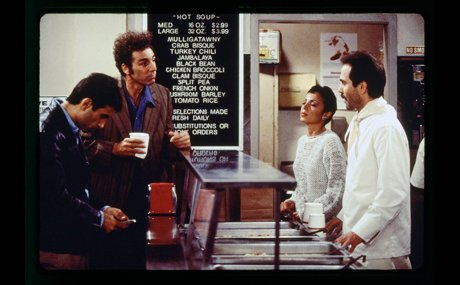

Cosmo KRAMER
Fruit enthusiast, coffee table book author, bagel master

Living in New York opposite of Jerry Seinfeld's apartment, Cosmo (known more as Kramer) has been the most beloved character of the Seinfeld ensemble
Achievements
-
Wrote a coffee table book on coffee tables

- Went on a bagel specialist strike for more than a decade
-
Revived the Merv Griffin show by creating a talk show with the Seinfeld ensemble with the thrown-away furniture of the Merv Griffin show

-
Underwear model for Calvin Klein

- Invented scent of the beach for Calvin Klein
- Refused to wear a ribbon on a cancer event
- Friends with the soup nazi

|
More information: here